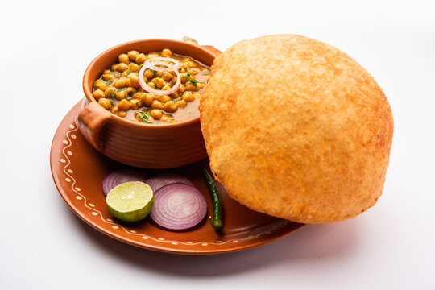

Home
Chole Bhature Recipe

This is a delicious and spicy Indian dish.
Chole Ingredients:
- Chickpeas
- Onions
- Tomatoes
- Garlic
- Ginger
- Spice (garam masala)
Bhature Ingredients:
- All-purpose flour (maida)
- Semolina (sooji)
- Yogurt (dahi)
- Salt
- Water
- soak the chickpeas in water for a few hours
- Cook the chickpeas until tender
- Prepare the spice blend.
- saute the onions until golden brown
- Add the cooked chickpeas and spice blend to the onions
- Simmer the mixture for 10-15 minutes
- For the bhature, mix all the ingredients and knead into a dough
- Roll out the dough and fry until golden brown
- Serve the chole with the bhature and enjoy!